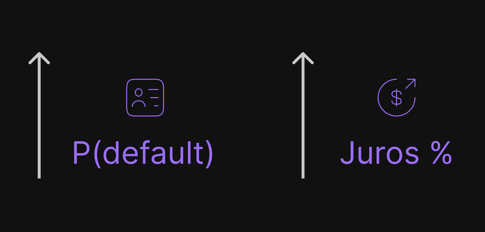

Aprenda a intuição por trás do algoritmo por meio de uma aplicação para detecção de fraudes em cartões!
Entenda os principais conceitos na modelagem de risco de crédito. E saiba como ela pode ser otimizada com machine learning!
